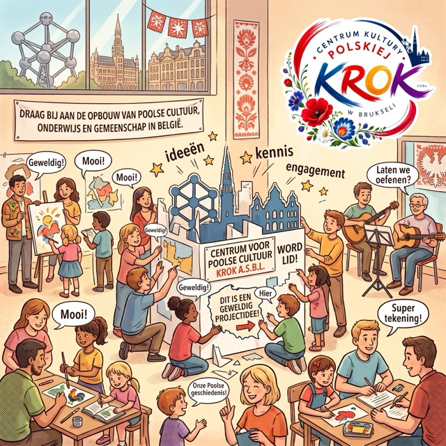
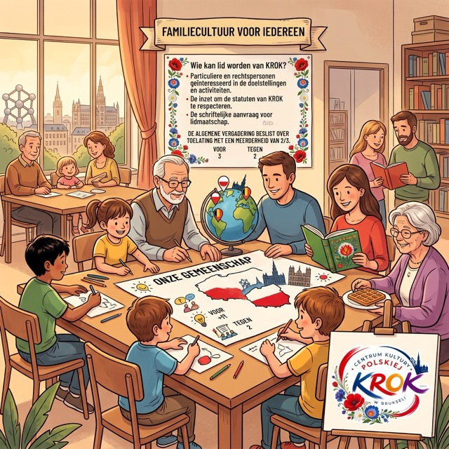
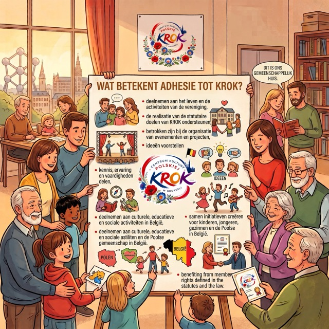
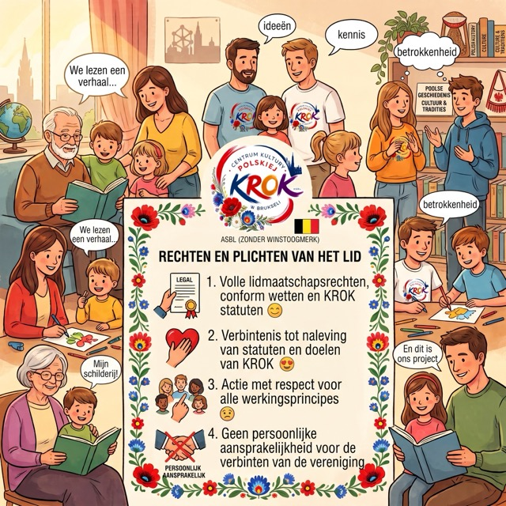
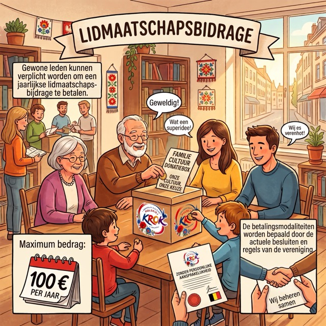
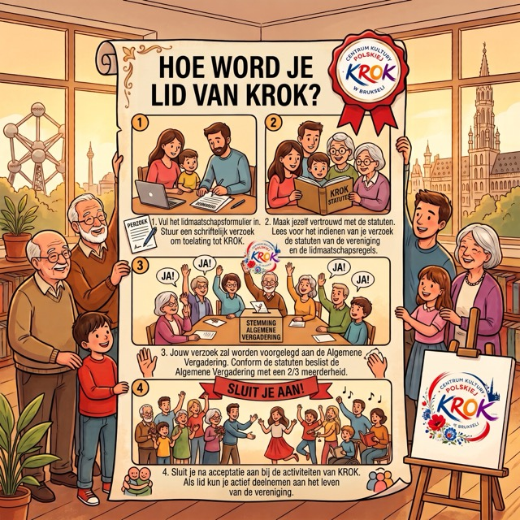

Sluit je aan bij KROK en bouw mee aan de Poolse cultuur, educatie en gemeenschap in België.
Het lidmaatschap van CENTRE DE LA CULTURE POLONAISE KROK ASBL biedt de mogelijkheid om actief deel te nemen aan het verenigingsleven, de doelstellingen te ondersteunen en samen vorm te geven aan initiatieven voor kinderen, jongeren, gezinnen en de Poolse gemeenschap in België.
De leden van KROK vormen een essentieel onderdeel van onze organisatie. Dankzij hun inzet, ideeën, kennis en ervaring kunnen we voortdurend nieuwe culturele, educatieve en maatschappelijke activiteiten ontplooien.

Lid van KROK kan worden elke natuurlijke persoon of rechtspersoon die:
Overeenkomstig de statuten beslist de Algemene Vergadering (Assemblée générale) over de toelating van een nieuw lid met een 2/3-meerderheid van stemmen.
De stichtende leden zijn werkende leden van de vereniging.

Het lidmaatschap biedt de mogelijkheid om actief deel te nemen aan de werking van de vereniging en gebruik te maken van de rechten die aan leden toekomen volgens de geldende wetgeving en de statuten van KROK.
Als lid kun je onder meer:

De leden van KROK genieten alle rechten die aan leden worden toegekend door de geldende wetgeving en de statuten van de vereniging.
Elk lid verbindt zich ertoe de statuten na te leven en te handelen met respect voor de doelstellingen en werkingsprincipes van KROK.
Leden zijn niet persoonlijk aansprakelijk voor de verbintenissen aangegaan in naam van de vereniging.

Werkende leden kunnen gehouden zijn tot de betaling van een jaarlijkse lidmaatschapsbijdrage.
Volgens de statuten bedraagt het maximale lidgeld 100 € per jaar.
Het actuele bedrag van de bijdrage en de betalingsvoorwaarden worden vastgesteld overeenkomstig de geldende besluiten en regels van de vereniging.

Een lid kan op elk moment zijn lidmaatschap beëindigen door een schriftelijk ontslag in te dienen bij het bestuursorgaan van KROK.
De statuten bepalen eveneens de regels met betrekking tot het verlies van de hoedanigheid van lid en de uitsluiting van een lid.
SAMEN VORMEN WE KROK Ervaring in het verenigingsleven is niet vereist. Je kunt je tijd, kennis, ideeën, ervaring of vaardigheden inbrengen.
Elke betrokkenheid maakt een verschil.
Eén stap, duizenden mogelijkheden.
Vul het lidmaatschapsformulier in en begin jouw traject met KROK.